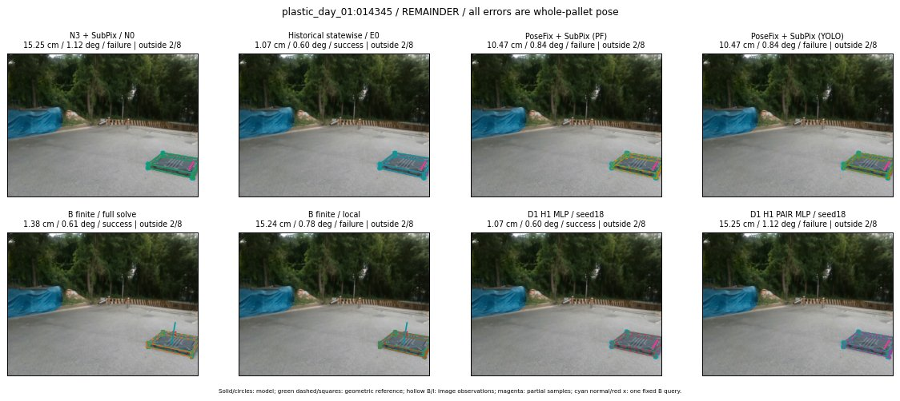

Whole-pallet pose errors; reference is a fixed geometric annotation, not certified physical GT.

Scores are uncalibrated logits. N0 retention is a numerical pose alias; it differs from H0 none or B fallback. B/I and profiles in baseline/B panels are original observations; L panels use new D1 observations. Only one deterministic supported B query is shown in a thumbnail; full support counts are below. Grey privacy rectangles edit the display copy only and are unrelated to O states; all observations were measured on original pixels. Thumbnails use JPEG quality85; detailed scientific panels are PNG.
| Method | Whole pose / cm, deg | Actual source | Selected ID | Score | Archived candidates | Eligible | N0 retained | H0 none | Fallback | Finite profiles |
|---|---|---|---|---|---|---|---|---|---|---|
| Raw YOLO + F | 21.80 cm / 1.18 deg / failure | OTHER | None | N/A | N/A | N/A | False | N/A | None | N/A |
| N3 + SubPix / N0 | 15.25 cm / 1.12 deg / failure | N0 | None | N/A | N/A | N/A | True | N/A | None | N/A |
| Historical statewise / E0 | 1.07 cm / 0.60 deg / success | E0_REGENERATED | None | N/A | N/A | N/A | False | N/A | False | N/A |
| PoseFix raw | 16.67 cm / 0.96 deg / failure | OTHER | None | N/A | N/A | N/A | False | N/A | None | N/A |
| PoseFix + SubPix (PF) | 10.47 cm / 0.84 deg / failure | OTHER | None | N/A | N/A | N/A | False | N/A | False | historical support records 9; finite audit N/A |
| PoseFix + SubPix (YOLO) | 10.47 cm / 0.84 deg / failure | OTHER | None | N/A | N/A | N/A | False | N/A | False | historical support records 9; finite audit N/A |
| Historical L, seed18 | 15.25 cm / 1.12 deg / failure | N0 | N0 | N/A | 48 | 48 | True | True | True | N/A |
| Historical B fixed bank | 1.07 cm / 0.60 deg / success | OTHER | LOGGED/G13/ORIGINAL_WD/outline_consider/13 | N/A | N/A | N/A | False | N/A | False | N/A |
| Historical B full | 58.79 cm / 3.50 deg / failure | OTHER | NEW/B/ORIGINAL_WD/h0/LOGGED/G13/ORIGINAL_WD/outline_consider/13/PROPOSED_NATIVE_YAW_0 | N/A | N/A | N/A | False | N/A | False | N/A |
| Historical edge full | 56.24 cm / 3.31 deg / failure | OTHER | NEW/edge/ORIGINAL_WD/h0/LOGGED/G13/ORIGINAL_WD/outline_consider/13/PROPOSED_NATIVE_YAW_0 | N/A | N/A | N/A | False | N/A | False | N/A |
| Historical AB full | 57.61 cm / 3.43 deg / failure | OTHER | NEW/AB/ORIGINAL_WD/h0/LOGGED/G13/ORIGINAL_WD/outline_consider/13/PROPOSED_NATIVE_YAW_0 | N/A | N/A | N/A | False | N/A | False | N/A |
| B finite / fixed bank | 1.07 cm / 0.60 deg / success | OTHER | LOGGED/G13/ORIGINAL_WD/outline_consider/13 | N/A | N/A | N/A | False | N/A | False | 18/18 |
| B finite / full solve | 1.38 cm / 0.61 deg / success | OTHER | NEW_FINITE/B/ORIGINAL_WD/h0/LOGGED/G13/ORIGINAL_WD/outline_consider/13/PROPOSED_NATIVE_YAW_0 | N/A | N/A | N/A | False | N/A | False | 18/18 |
| B finite / local | 15.24 cm / 0.78 deg / failure | OTHER | NEW_FINITE/B/ORIGINAL_WD/h0/N0_LOCAL_SAME_PHYSICAL_POSE/ORIGINAL_WD | N/A | N/A | N/A | False | N/A | False | 18/18 |
| Edge finite / full solve | 1.07 cm / 0.60 deg / success | E0_REGENERATED | G13/ORIGINAL_WD/sample/0 | N/A | N/A | N/A | False | N/A | False | 18/18 |
| D0 H0 MLP / seed18 | 15.25 cm / 1.12 deg / failure | N0 | N0 | 1.2716330289840698 | 13 | 13 | True | True | True | N/A |
| D0 H0 MLP / seed19 | 15.25 cm / 1.12 deg / failure | N0 | N0 | 1.7397277355194092 | 13 | 13 | True | True | True | N/A |
| D0 H0 MLP / seed20 | 15.25 cm / 1.12 deg / failure | N0 | N0 | -0.5403463840484619 | 13 | 13 | True | True | True | N/A |
| D0 H1 MLP / seed18 | 1.07 cm / 0.60 deg / success | OTHER | G13/ORIGINAL_WD/endpoint/13 | -2.888951539993286 | 13 | 13 | False | False | False | N/A |
| D0 H1 MLP / seed19 | 1.07 cm / 0.60 deg / success | OTHER | G13/ORIGINAL_WD/endpoint/13 | -3.1763267517089844 | 13 | 13 | False | False | False | N/A |
| D0 H1 MLP / seed20 | 1.07 cm / 0.60 deg / success | OTHER | G13/ORIGINAL_WD/endpoint/13 | -3.8890979290008545 | 13 | 13 | False | False | False | N/A |
| D1 H0 MLP / seed18 | 15.25 cm / 1.12 deg / failure | N0 | N0 | 5.706500053405762 | 13 | 13 | True | True | True | N/A |
| D1 H0 MLP / seed19 | 15.25 cm / 1.12 deg / failure | N0 | N0 | 5.469263553619385 | 13 | 13 | True | True | True | N/A |
| D1 H0 MLP / seed20 | 15.25 cm / 1.12 deg / failure | N0 | N0 | 5.121604919433594 | 13 | 13 | True | True | True | N/A |
| D1 H1 MLP / seed18 | 1.07 cm / 0.60 deg / success | OTHER | G13/ORIGINAL_WD/endpoint/13 | -1.0781086683273315 | 13 | 13 | False | False | False | N/A |
| D1 H1 MLP / seed19 | 1.07 cm / 0.60 deg / success | OTHER | G13/ORIGINAL_WD/endpoint/13 | -1.265149712562561 | 13 | 13 | False | False | False | N/A |
| D1 H1 MLP / seed20 | 1.07 cm / 0.60 deg / success | OTHER | G13/ORIGINAL_WD/endpoint/13 | -1.1304187774658203 | 13 | 13 | False | False | False | N/A |
| D1 H1 ROLE AFFINE / seed18 | 15.25 cm / 1.12 deg / failure | N0 | N0 | -0.5868921279907227 | 13 | 13 | True | False | False | N/A |
| D1 H1 ROLE AFFINE / seed19 | 15.25 cm / 1.12 deg / failure | N0 | N0 | -0.5505028367042542 | 13 | 13 | True | False | False | N/A |
| D1 H1 ROLE AFFINE / seed20 | 15.25 cm / 1.12 deg / failure | N0 | N0 | -0.2757829427719116 | 13 | 13 | True | False | False | N/A |
| D1 H1 PAIR MLP / seed18 | 15.25 cm / 1.12 deg / failure | N0 | N0 | -0.7100403308868408 | 13 | 2 | True | False | False | N/A |
| D1 H1 PAIR MLP / seed19 | 15.25 cm / 1.12 deg / failure | N0 | N0 | -0.32514262199401855 | 13 | 2 | True | False | False | N/A |
| D1 H1 PAIR MLP / seed20 | 15.25 cm / 1.12 deg / failure | N0 | N0 | 0.28661811351776123 | 13 | 2 | True | False | False | N/A |
| D1 H1 PAIR ROLE AFFINE / seed18 | 15.25 cm / 1.12 deg / failure | N0 | N0 | -0.1792783886194229 | 13 | 2 | True | False | False | N/A |
| D1 H1 PAIR ROLE AFFINE / seed19 | 15.25 cm / 1.12 deg / failure | N0 | N0 | -0.12227034568786621 | 13 | 2 | True | False | False | N/A |
| D1 H1 PAIR ROLE AFFINE / seed20 | 15.25 cm / 1.12 deg / failure | N0 | N0 | -0.07729004323482513 | 13 | 2 | True | False | False | N/A |
| Regenerated common E0 | 1.07 cm / 0.60 deg / success | E0_REGENERATED | E0_REGENERATED | N/A | N/A | N/A | False | N/A | False | N/A |